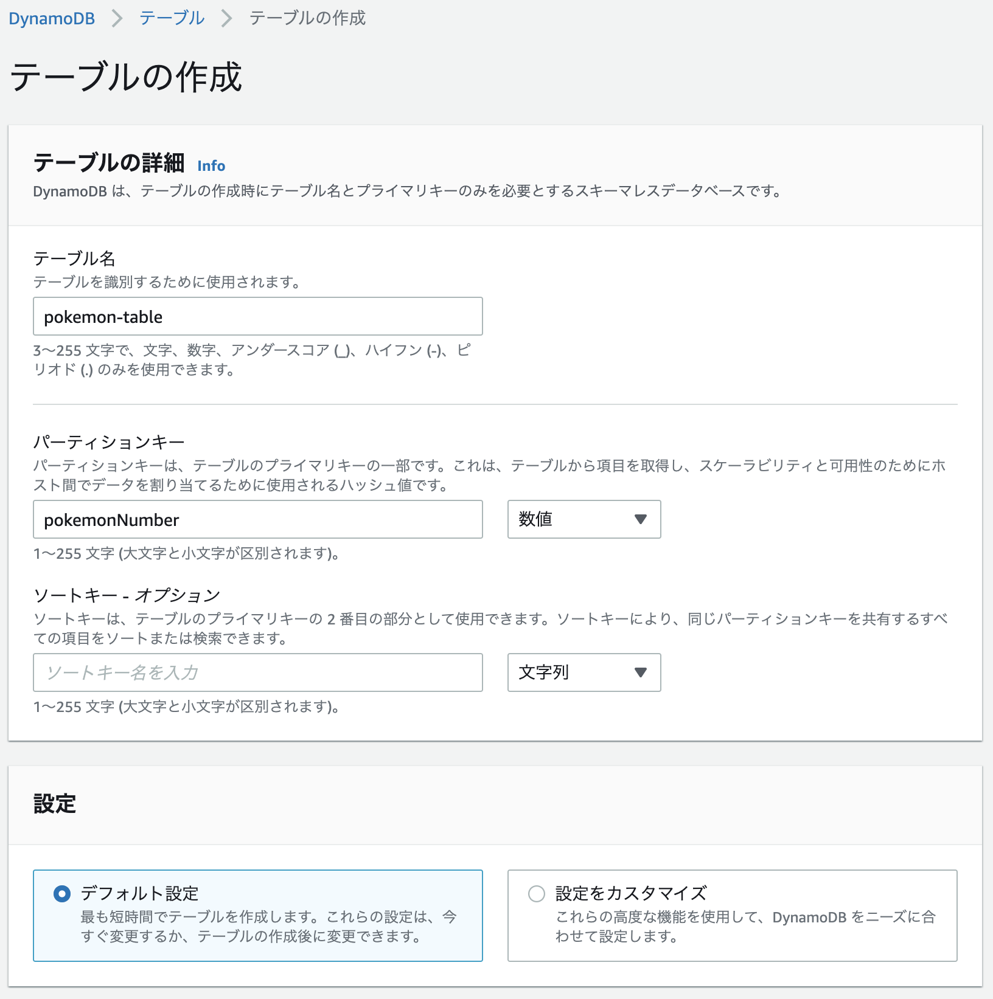
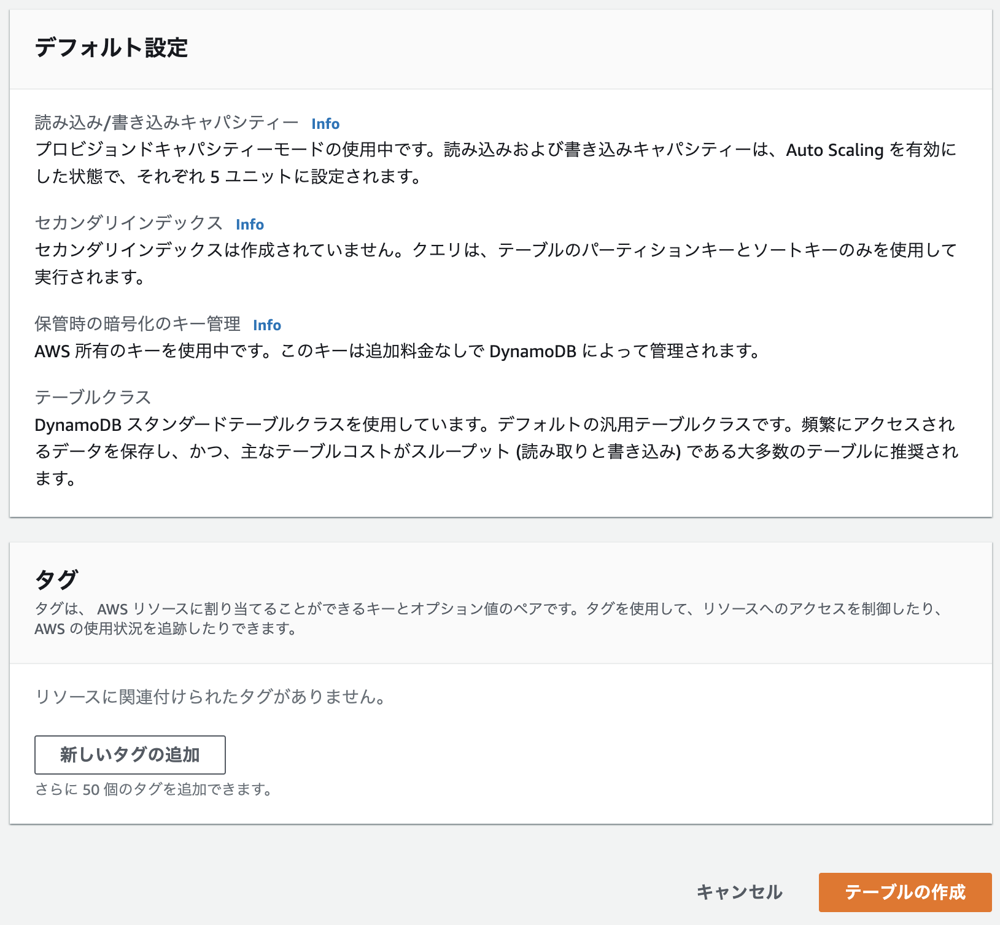
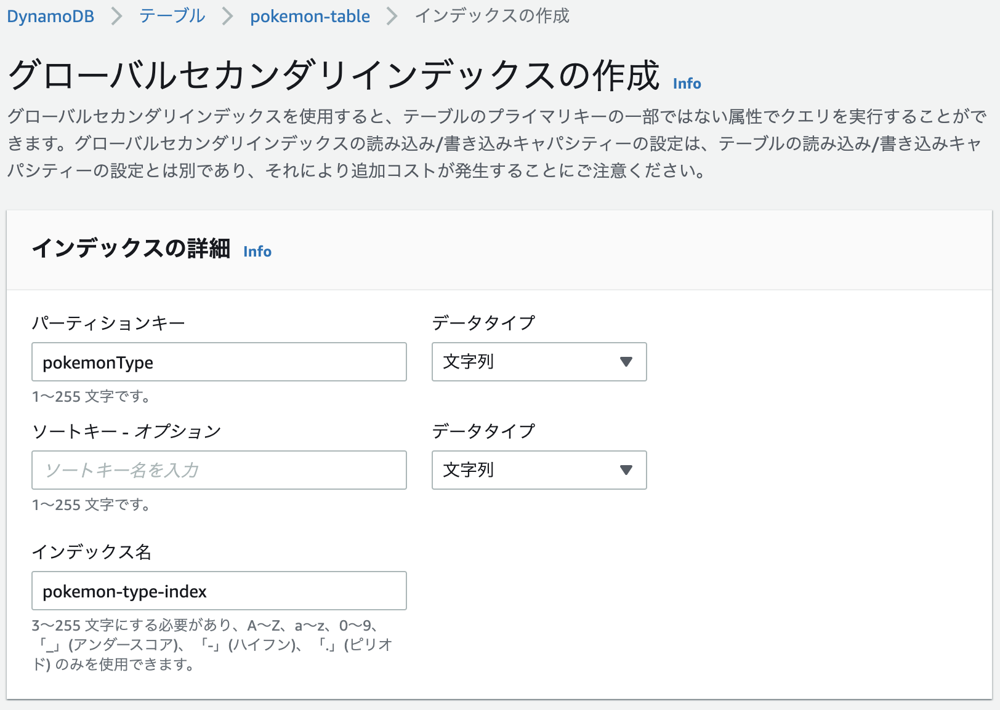

AWS CLIでDynamoDBを操作する
AWS CLIでDynamoDBを操作する方法です。
AWS マネジメントコンソールから pokemon-table という名前でテーブルを作ります。
pokemonNumber というパーテーションキーを数字型設定しました。


list-tables
テーブル一覧を表示します。
aws dynamodb list-tables | jq
{
"TableNames": [
"pokemon-table"
]
}
describe-table
テーブル詳細を表示します。
aws dynamodb describe-table \
--table-name pokemon-table | jq
{
"Table": {
"AttributeDefinitions": [
{
"AttributeName": "pokemonNumber",
"AttributeType": "N"
}
],
"TableName": "pokemon-table",
"KeySchema": [
{
"AttributeName": "pokemonNumber",
"KeyType": "HASH"
}
],
"TableStatus": "ACTIVE",
"CreationDateTime": "2022-03-14T08:50:51.248000+09:00",
"ProvisionedThroughput": {
"NumberOfDecreasesToday": 0,
"ReadCapacityUnits": 5,
"WriteCapacityUnits": 5
},
"TableSizeBytes": 0,
"ItemCount": 0,
"TableArn": "arn:aws:dynamodb:ap-northeast-1:xxxxxxxxxxxx:table/pokemon-table",
"TableId": "20804895-068c-4096-8b9d-0dada0bdeeb1"
}
}
put-item
テーブルにアイテムを追加します。
aws dynamodb put-item \
--table-name pokemon-table \
--item '{ "pokemonNumber": { "N": "143" }, "pokemonName": { "S": "Snorlax" }, "pokemonType": { "S": "Normal" } }'
aws dynamodb put-item \
--table-name pokemon-table \
--item '{ "pokemonNumber": { "N": "25" }, "pokemonName": { "S": "Pikachu" }, "pokemonType": { "S": "Electric" } }'
aws dynamodb put-item \
--table-name pokemon-table \
--item '{ "pokemonNumber": { "N": "132" }, "pokemonName": { "S": "Ditto" }, "pokemonType": { "S": "Normal" } }'
aws dynamodb put-item \
--table-name pokemon-table \
--item '{ "pokemonNumber": { "N": "133" }, "pokemonName": { "S": "Eevee" }, "pokemonType": { "S": "Normal" } }'
aws dynamodb put-item \
--table-name pokemon-table \
--item '{ "pokemonNumber": { "N": "4" }, "pokemonName": { "S": "Charmander" }, "pokemonType": { "S": "Fire" } }'
aws dynamodb put-item \
--table-name pokemon-table \
--item '{ "pokemonNumber": { "N": "60" }, "pokemonName": { "S": "Poliwag" }, "pokemonType": { "S": "Water" } }'
get-item
パーテーションキー（今回の場合はポケモンの番号）を使ってアイテムを取得します。
aws dynamodb get-item \
--table-name pokemon-table \
--key '{ "pokemonNumber": { "N": "143" } }' | jq
{
"Item": {
"pokemonName": {
"S": "Snorlax"
},
"pokemonNumber": {
"N": "143"
},
"pokemonType": {
"S": "Normal"
}
}
}
scan
任意のアイテムを取得します。 全てのアイテムに対して検索をかけるのでアイテムが多い場合はお金がかかるので、基本は後述の query を使った方が良さそうです。
アイテムを全て取得します。
aws dynamodb scan \
--table-name pokemon-table | jq
スキャンを使ってノーマルタイプのポケモンを検索します。
aws dynamodb scan \
--table-name pokemon-table \
--filter-expression 'pokemonType = :pokemonType' \
--expression-attribute-values '{ ":pokemonType": { "S": "Normal" } }' | jq
スキャンを使ってノーマルタイプのポケモンを1件検索します。
aws dynamodb scan \
--table-name pokemon-table \
--filter-expression 'pokemonType = :pokemonType' \
--expression-attribute-values '{ ":pokemonType": { "S": "Normal" } }' \
--limit 1 | jq
スキャンを使ってポケモン番号が100以上のポケモンを検索します。
aws dynamodb scan \
--table-name pokemon-table \
--filter-expression 'pokemonNumber >= :pokemonNumber' \
--expression-attribute-values '{ ":pokemonNumber": { "N": "100" } }' | jq
スキャンを使ってノーマルタイプかつ名前がSnorlaxのポケモンを検索します。
aws dynamodb scan \
--table-name pokemon-table \
--filter-expression 'pokemonType = :pokemonType AND pokemonName = :pokemonName' \
--expression-attribute-values '{ ":pokemonType": { "S": "Normal" }, ":pokemonName": { "S": "Snorlax" } }' | jq
クエリを分けて書くこともできます。
aws dynamodb scan \
--table-name pokemon-table \
--filter-expression 'pokemonType = :pokemonType' \
--expression-attribute-values '{ ":pokemonType": { "S": "Normal" } }' \
--filter-expression 'pokemonName = :pokemonName' \
--expression-attribute-values '{ ":pokemonName": { "S": "Snorlax" } }' | jq
スキャンを使ってノーマルタイプかつポケモン番号が100以上を検索します。
aws dynamodb scan \
--table-name pokemon-table \
--filter-expression 'pokemonNumber >= :pokemonNumber AND pokemonType = :pokemonType' \
--expression-attribute-values '{ ":pokemonNumber": { "N": "100" }, ":pokemonType": { "S": "Normal" } }' | jq
スキャンを使ってほのおタイプ、または電気タイプのポケモンを探します。
aws dynamodb scan \
--table-name pokemon-table \
--filter-expression 'pokemonType = :electricType OR pokemonType = :fireType' \
--expression-attribute-values '{ ":electricType": { "S": "Electric" }, ":fireType": { "S": "Fire" } }' | jq
グローバルセカンダリインデックス
クエリで任意のパラメーターを使うにはグローバルセカンダリインデックスを使う必要があります。 ポケモンのタイプのグローバルセカンダリインデックスを作成します。

Query
aws dynamodb query \
--table-name pokemon-table \
--key-condition-expression "pokemonNumber = :pokemonNumber" \
--expression-attribute-values '{ ":pokemonNumber" : { "N" : "143" } }' | jq
aws dynamodb query \
--table-name pokemon-table \
--index-name pokemon-type-index \
--key-condition-expression "pokemonType = :pokemonType" \
--expression-attribute-values '{ ":pokemonType": { "S": "Normal" } }' | jq
PartiQL for DynamoDB
SQL互換のクエリ言語のPartiQLを使うことでSQLを実行することができます。
ポケモン番号が143のポケモンを探します。
aws dynamodb execute-statement \
--statement \
"SELECT * FROM \"pokemon-table\" WHERE pokemonNumber=143" | jq
ノーマルタイプのポケモンを探します。
aws dynamodb execute-statement \
--statement \
"SELECT * FROM \"pokemon-table\" WHERE pokemonType='Normal'" | jq
Snorlaxという名前のポケモンを探します。
aws dynamodb execute-statement \
--statement \
"SELECT * FROM \"pokemon-table\" WHERE pokemonName='Snorlax'" | jq
Snorlaxという名前のポケモンを探します。こちらはグローバルセカンダリインデックスを使用します。
aws dynamodb execute-statement \
--statement \
"SELECT * FROM \"pokemon-table\".\"pokemon-type-index\" WHERE pokemonType='Normal'" | jq
update-item
まず更新前のアイテムを確認します。
aws dynamodb get-item \
--table-name pokemon-table \
--key '{ "pokemonNumber": { "N": "143" } }' | jq
アイテムを更新します。
aws dynamodb update-item \
--table-name pokemon-table \
--key '{ "pokemonNumber": { "N": "143" } }' \
--update-expression 'set pokemonName = :pokemonName' \
--expression-attribute-values '{ ":pokemonName": { "S": "Snorlax V" } }' | jq
–return-values ‘ALL_NEW’ をつけると更新したアイテムが表示されます。
aws dynamodb update-item \
--table-name pokemon-table \
--key '{ "pokemonNumber": { "N": "143" } }' \
--update-expression 'set pokemonName = :pokemonName' \
--expression-attribute-values '{ ":pokemonName": { "S": "Snorlax V Max" } }' \
--return-values 'ALL_NEW' | jq
{
"Attributes": {
"pokemonName": {
"S": "Snorlax V Max"
},
"pokemonNumber": {
"N": "143"
},
"pokemonType": {
"S": "Normal"
}
}
}
delete-item
アイテムを削除します。
aws dynamodb delete-item \
--table-name pokemon-table \
--key '{ "pokemonNumber": { "N": "143" } }'
参考記事
https://www.wakuwakubank.com/posts/675-aws-cli-dynamodb/
https://dynobase.dev/dynamodb-cli-query-examples/#query-with-sorting
https://dev.classmethod.jp/articles/partiql-for-dynamodb-example/
https://qiita.com/ekzemplaro/items/93c0aef433a2b633ab4a
https://docs.aws.amazon.com/amazondynamodb/latest/developerguide/
getting-started-step-7.html